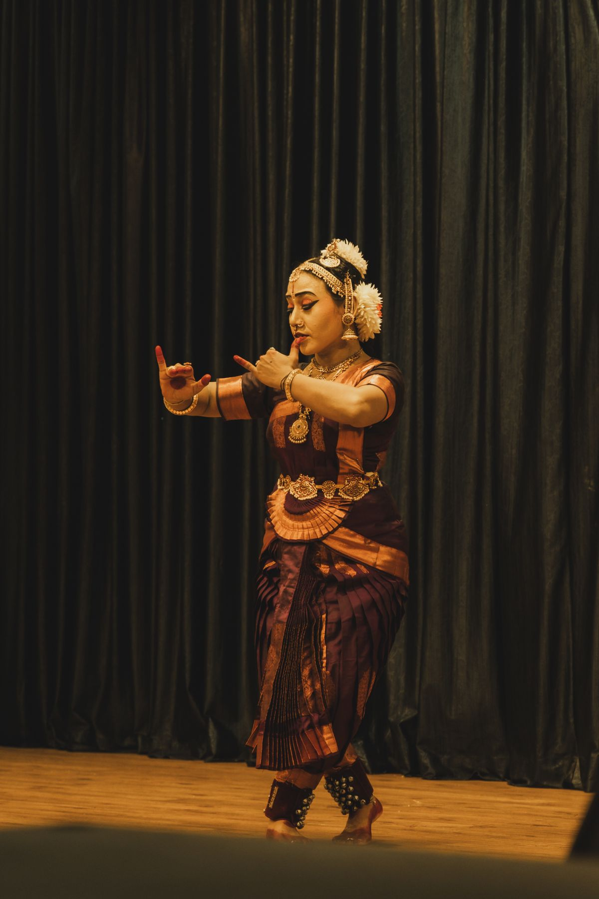

The December Margam
Chennai · December 2025
The brief
A Mylapore sabha's prime December-season slot: 6:30 p.m., a 900-seat hall, and the most demanding audience in Indian classical dance — rasikas who know the Todi varnam by heart and will notice a korvai that lands an aksharam late. The sabha asked for the complete margam with live orchestra, no excerpts, no amplification tricks.
The decisions
The full nine items as printed on the Home page — 96 minutes of dance plus the interval. The varnam stayed in Todi rather than moving to a brighter ragam for a general audience; this was not a general audience. The orchestra was the regular four — nattuvangam, vocalist, mridangam, violin — with one extra full call (₹8,000, on the card) spent entirely on the varnam's korvais. Lighting was kept to a warm front wash: December audiences come for the dancing, not for colour changes.
The outcome
The hall was full by 6:15 p.m. The varnam held the room for its full thirty-two minutes, and the sabha rebooked the same slot for December 2026 before the season ended — the review quoted on the Home page is theirs. The programme, the fee band and the interval all matched what the builder on this site produces for the same nine items.